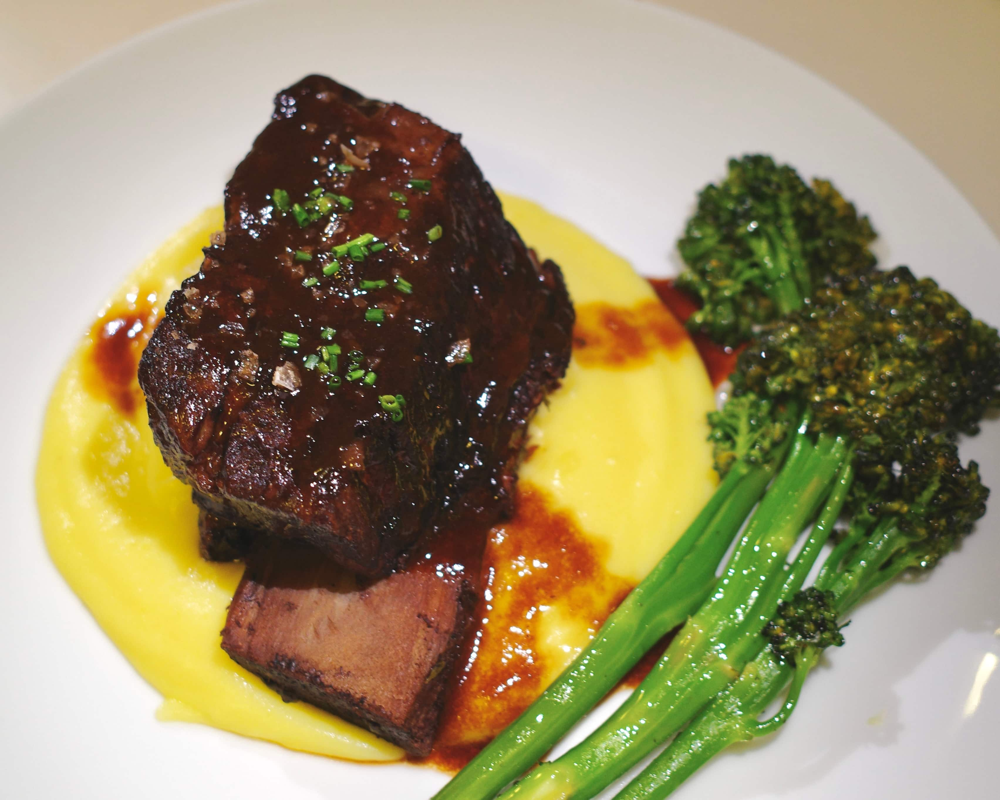

Democratize technological flourishing.Couple hardware acceleration with civic responsibility.Build a quantum substrate for a peaceful handoff.
I’m Timo Chang, and this is my life’s work.
Previous
Tabletop dark matter detector with part-per-billion sensitivity (Williams College).
Tactical simulation software for asteroid-bound explosive ordnance (Lawrence Livermore).
Sidequests
Landscape photography; cooking; violin; golfing.
Creative Inspirations
Steve Jobs; Claude Monet; Peter Zumthor; Dieter Rams; Ian Callum; Richard Hamming.
timo [at] timochang [dot] com
Braised Beef Short Ribs & Pommes Purée

Poulet à la Provençale
On Great Quantum Engineering
A definite optimist's philosophy on quantum systems engineering
"In order to improve your game, you must study the endgame before everything else." — José Raúl Capablanca, World Chess Champion 1921
Casual chess players learn the game forward. They memorize openings and hunt for tactical advantages in the middle game, winning material here or dominating a file there. They view the game as a collection of local optimizations, hoping that if they win enough small battles, the war will take care of itself.
The Grandmaster inverts this logic. He studies the endgame first because he understands that a checkmate with a single pawn is worth more than a draw with a full queen advantage. He does not play to accumulate material; he plays to force a specific, simplified state where victory is inevitable.
A good engineer is a master of tactics. He can optimize a specific component, minimize a specific noise source, or design a beautiful control loop. He wins material. But winning material and winning the game are different skills.
I learned this lesson the hard way. As I transitioned from the clean, bounded problems of physics coursework to the chaos of building a quantum information processor, I realized all I had learned in school was tactics. I could stabilize the frequency of a laser or improve the coherence of a qubit, but I lacked the clarity of a Grandmaster.
I found myself asking: How do I identify the point of diminishing returns? Amidst a seemingly boundless number of optimization problems, how do I choose the few that actually move the needle?
These were daunting questions, but I came to understand that the inability to answer them was not a skill issue. It was a deficiency of framework. The great engineer treats the endgame not merely as an outcome but as the generator of logic. He defines the particular application first, then derives every move in the stack—from the hardware topology to the compilation strategy—from the final winning endgame. A “better” component is worthless if it does not improve his final device performance.
Consider the architectural decisions required to build a functional quantum information processor. The engineer must select a qubit modality, qubit encoding, system connectivity, entanglement method, error correction code, and circuit compilation strategy. These decisions must work together. A successful choice in one layer cannot compensate for another that prevents the machine from producing quantum advantage.
Without a defined application, how should the engineer choose among them? Each option offers advantages under some conditions and liabilities under others. Optimizing the layers separately gives us better components without necessarily giving us a better machine. The magnitude of our work is wasted by the chaos of our direction.
But impose a defined endgame, and you apply a rigorous boundary condition that drastically limits the space of possible trajectories. Select a single, well-defined algorithm—whether a specific Hamiltonian simulation or a targeted optimization routine—and anchor the entire stack to that singular point. You trade speculative market verticals and the seductive promise of every possible application for a design space you can explore systematically.
By restricting the scope of application, you give engineering decisions the opportunity to compound productively. The application dictates the connectivity; the connectivity constrains the error correction; the error correction selects the qubit. Each commitment supplies the logic for the next.
This constraint transforms the engineering process. It replaces the aimless optimization of micro-metrics with a rigorous analysis of resource management, time overhead, and error budgeting. You can identify which improvements move the machine toward its endgame and which merely accumulate material. Architecture becomes a derived solution.
Deriving the architecture from the application is the essence of requirements-based engineering. It is the discipline of sacrificing the infinite potential of what a machine might do for the precise requirements of what it must do.
Yet our field remains entranced by indefinite optimism. We are magnetized by the shimmering notion of “Universal Fault Tolerance”—a horizon that promises a trillion-dollar market while leaving the particular computational victory unresolved. Engineering for universality and optionality offers the comfort of avoiding the risk of a wrong commitment.
But the indefinite optimist pays the cost of forever waiting for a better future to arrive; he can never chart and build that future for himself. Without an endgame, every improvement promises progress, but none tells him how far he has left to go.
We must be definite optimists. Define a winnable quantum game. Accept the risk of choosing it. Then derive the framework that turns ambition into engineering decisions.
The utility of studying the endgame extends far beyond the engineering stack. It illuminates the commercial path and dictates the precise talent density required to walk it. By fixing the application and developing a rigorous quantum systems engineering framework, one can turn a lottery ticket into an execution plan. The great engineer does not rely on the luck of a million-to-one shot. He chooses an endgame where he possesses an asymmetric advantage, then organizes his resources around the work required to win it.
The natural objection to this philosophy is fear of the ceiling. The skeptic asks: If we build for a specific application, do we not cap our potential? By ignoring the universal dream, are we leaving the trillion-dollar opportunity on the table?
Such an attitude assumes that one can only play this game once.
The reward for winning this game is that you earn the right to play again.
You take the capital, the credibility, the system frameworks, and the hardened team from the first victory, and deploy them into a slightly larger, slightly harder game. You repeat this loop. Solve, win, expand.
The analogy is literal in the case of DeepMind. Demis Hassabis has long dreamed of general intelligence, but his team pursued that ambition through small, bounded games. They began with Atari games such as Pong, then tackled Go, chess, and StarCraft, and eventually reached into biology with AlphaFold. The talent and infrastructure forged in those games became the foundation for building transformer-based language models. Each bounded victory expanded the team’s capacity to pursue its original, unbounded ambition.
We see the same lineage in NVIDIA. Today, they are the undisputed sovereign of the AI compute stack, but their path was not a straight line to the H200. It began with the humble game of 3D graphics rendering. The massive parallelization required to render pixels proved useful for scientific computing, and eventually for the massive matrix multiplications of deep learning. The hardware and software built to win one market became the means of entering the next.
Quantum computing is currently trying to skip this history. The industry is attempting to jump straight from the lab bench to the universal machine without ever playing the intermediate games of Pong or scientific simulation. We are trying to be NVIDIA in 2024 without ever being NVIDIA in 1999.
The path to universality runs through specific victories. That is why I insist on a defined endgame. I am not limiting the scope of quantum mechanics; I am looking for its first winnable game. By solving a specific, high-value problem, we do more than generate scientific data. We build the CUDA of quantum: the control systems, the calibration routines, and the engineering culture required to scale. We win the right to play again.
Eventually, we look up and realize we have been riding the crest of the technological frontier for twenty-five years, keeping our finger on the pulse of possibility, always searching for the next game that pushes the boundary of human capability. And only then do we recognize the shape of what we have built: the universal machine we dreamed of was not a miracle we waited for, but the inevitable sum of the games we chose to win.
This essay is an unlisted working draft.
Incorrect password.